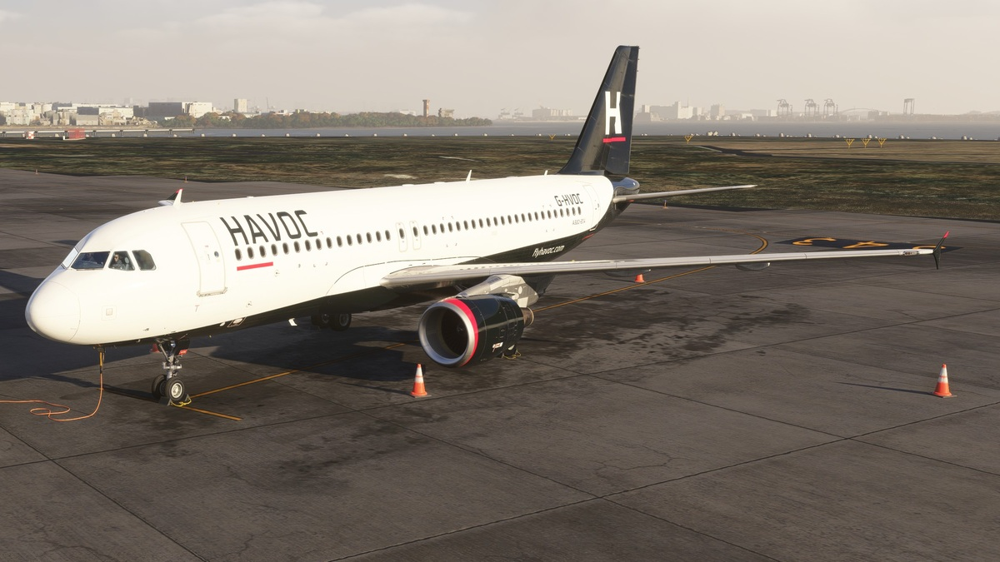

G-HVOC
HAVOC 2 · Airbus A320-214 · London Luton

Drag to rotate or scroll to zoom.
Exterior adapted from FlightGear A320-family. Editable model · Copyright · GPL v2

HAVOC 2 · Airbus A320-214 · London Luton
Drag to rotate or scroll to zoom.
Exterior adapted from FlightGear A320-family. Editable model · Copyright · GPL v2
